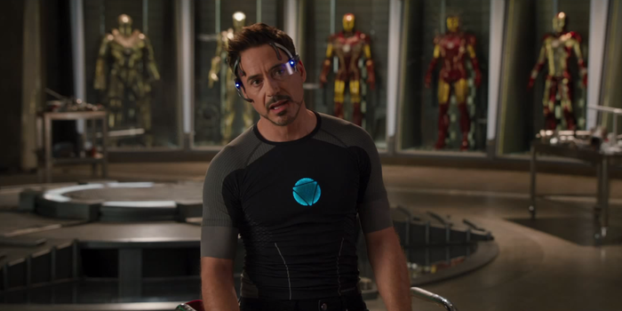

トニー・スターク / アイアンマン
不眠症に苦しむ天才発明家 // 遠隔操作スーツ開発者
ニューヨーク決戦のトラウマからパワードスーツの依存症に陥り、強迫観念に駆られて大量のアーマー（ハウス・パーティー・プロトコル）を急造。パーツが個別に飛来して装着される最新型「マーク42」と共に、己の生身の価値を試される戦いに挑む。
「家を奪われても、おもちゃを奪われても、これだけは変わらない。僕はアイアンマンだ」
ペッパー・ポッツ
スターク・インダストリーズCEO // トニーの最愛の人
悪夢にうなされ、部屋にアーマーを呼び出してしまうトニーを深く心配する。自宅が襲撃された際にはトニーの指示でマーク42を一時的に纏い彼を救うが、中盤キリアンに囚われ、強制的にエクストリミスを投与されてしまう。
「これについて文句を言ったら、絶対に承知しないわよ」
ジェームズ・“ローディ”・ローズ / アイアン・パトリオット
アメリカ空軍大佐 // 国家の盾
ウォーマシンを星条旗カラーにリペイントし、米政府公認のヒーロー「アイアン・パトリオット」としてテロ組織マンダリンの行方を追う。スーツのシステムをハックされ大統領を拉致される窮地に陥るが、生身でもトニーと共に抜群のコンビネーションで最前線を切り抜ける。
「アイアン・パトリオットの方がずっとカッコいいだろ？……パスワードは『あたたかい戦争』だ、トニー。」
アルドリッチ·キリアン
A.I.M.創設者 // エクストリミス最高傑作
1999年の大晦日にトニーに約束を反故にされ、絶望の中で自殺を考えた過去を持つ男。シンクタンク「A.I.M.」を結成し、狂暴な生体ナノテクノロジー「エクストリミス」を完成。偽りのテロリスト『マンダリン』を仕立て上げ、裏から世界を牛耳ろうとする。
「私は、天才の脳の中に狂気を見入る」